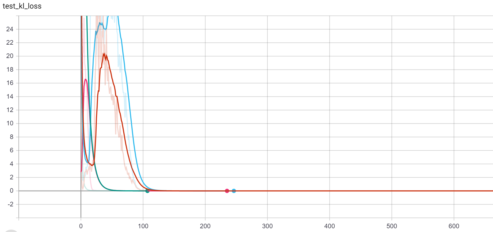
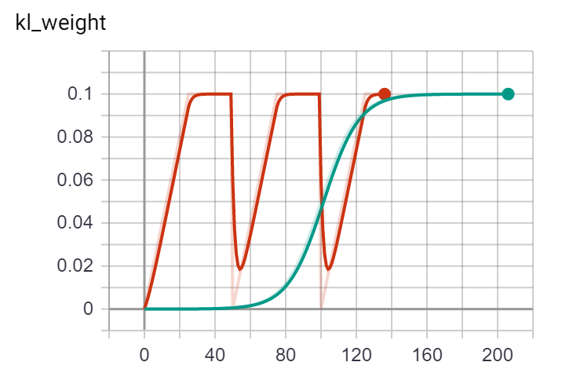

Here's an example midi of the training data
Machine generated drumbeats [Also a project for 21M.383 (Computational Music Theory)]
As a person who is trying to create new music, it is often difficult to create pieces out of thin air without inspiration. One possibility is to have some beat be played and trying to fill music to it. However this would require some sort of algorithm that can create a non-repetitive yet consistent beat - let's try to do that through two deep learning techniques - Variational Auto Encoders(VAE) and Generative Adverserial Networks (GAN)!
I was able to get over 13.6 hours of drum beats in 1150 midi files from here linklonk . The midi files are quite detailed with velocity and a fine level of temporal resolution. However I do not have the compute to utilize this fully, so instead we would have to preprocess the data slightly.
Here's an example midi of the training data
I did a couple things to make my life easier
| Category | midi pitch numbers |
|---|---|
| Bass | 36 |
| Snare | 37,38,40 |
| High tom | 48,50 |
| Low mid tom | 45,47 |
| High floor tom | 43,58 |
| Open high hat | 46,26 |
| Closed high hat | 22,42,44 |
| Crash cymbal | 49,52,55,57 |
| Ride Cymbal | 51,53,59 |
As a result, I was able to one hot encode a 'note' as a binary vector of size 9, this allows the encoding of multiple simultaneous notes/ lack of note. For example, a note with bass and a snare would be encoded as:
[1,1,0,0,0,0,0,0,0]
And since there are only 16 notes in each measure, and 4 measures. My training input is simplified to be a constant size of 576.
So the above midi would translate into:
[0. 0. 0. 0. 0. 0. 1. 0. 1. 0. 0. 0. 0. 0. 0. 0. 0. 0. 0. 0. 0. 0. 0. 0.
1. 0. 0. 0. 0. 0. 0. 0. 0. 0. 0. 0. 0. 0. 0. 0. 0. 0. 1. 1. 0. 0. 0. 0.
0. 0. 0. 0. 0. 0. 0. 0. 0. 0. 0. 0. 1. 0. 0. 0. 0. 0. 0. 0. 0. 0. 0. 1.
0. 0. 0. 0. 0. 0. 1. 0. 1. 0. 0. 0. 0. 0. 0. 0. 0. 0. 0. 0. 0. 0. 0. 0.
1. 0. 0. 0. 0. 0. 0. 0. 0. 0. 0. 0. 0. 0. 0. 0. 0. 0. 1. 1. 0. 0. 0. 0.
0. 0. 0. 0. 0. 0. 0. 0. 0. 0. 0. 0. 1. 0. 0. 0. 0. 0. 0. 0. 0. 0. 0. 0.
0. 0. 0. 0. 0. 0. 1. 0. 1. 0. 0. 0. 0. 0. 0. 0. 0. 0. 0. 0. 0. 0. 0. 0.
1. 0. 0. 0. 0. 0. 0. 0. 0. 0. 0. 0. 0. 0. 0. 0. 0. 0. 1. 1. 0. 0. 0. 0.
0. 0. 0. 0. 0. 0. 0. 0. 0. 0. 0. 0. 1. 0. 0. 0. 0. 0. 0. 0. 0. 0. 0. 1.
0. 0. 0. 0. 0. 0. 1. 0. 1. 0. 0. 0. 0. 0. 0. 0. 0. 0. 0. 0. 0. 0. 0. 0.
1. 0. 0. 0. 0. 0. 0. 0. 0. 0. 1. 0. 0. 0. 0. 0. 0. 0. 0. 1. 0. 0. 0. 0.
0. 0. 1. 0. 0. 1. 0. 0. 0. 0. 0. 0. 0. 0. 0. 0. 0. 0. 0. 0. 0. 0. 0. 0.
0. 0. 0. 0. 0. 0. 1. 0. 1. 0. 0. 0. 0. 0. 0. 0. 0. 0. 0. 0. 0. 0. 0. 0.
1. 0. 0. 0. 0. 0. 0. 0. 0. 0. 0. 0. 0. 0. 0. 0. 0. 0. 1. 1. 0. 0. 0. 0.
0. 0. 0. 0. 0. 0. 0. 0. 0. 0. 0. 0. 1. 0. 0. 0. 0. 0. 0. 0. 0. 0. 0. 1.
0. 0. 0. 0. 0. 0. 1. 0. 1. 0. 0. 0. 0. 0. 0. 0. 0. 0. 0. 0. 0. 0. 0. 0.
1. 0. 0. 0. 0. 0. 0. 0. 0. 0. 0. 0. 0. 0. 0. 0. 0. 0. 1. 1. 0. 0. 0. 0.
0. 0. 0. 0. 0. 0. 0. 0. 0. 0. 0. 0. 1. 0. 0. 0. 0. 0. 0. 0. 0. 0. 0. 0.
0. 0. 0. 0. 0. 0. 1. 0. 1. 0. 0. 0. 0. 0. 0. 0. 0. 0. 0. 0. 0. 0. 0. 0.
1. 0. 0. 0. 0. 0. 0. 0. 0. 0. 0. 0. 0. 0. 0. 0. 0. 0. 1. 1. 0. 0. 0. 0.
0. 0. 0. 0. 0. 0. 0. 0. 0. 0. 0. 0. 1. 0. 0. 0. 0. 0. 0. 0. 0. 0. 0. 1.
0. 0. 0. 0. 0. 0. 1. 0. 1. 0. 0. 0. 0. 0. 0. 0. 0. 0. 0. 0. 0. 0. 0. 0.
1. 0. 0. 0. 0. 0. 0. 0. 0. 0. 1. 0. 0. 0. 0. 0. 0. 0. 0. 1. 0. 0. 0. 0.
0. 0. 1. 0. 0. 1. 0. 0. 0. 0. 0. 0. 0. 0. 0. 0. 0. 0. 0. 0. 0. 0. 0. 0.]
Which sounds like the following:
Before I hop into my results and methods, let's do a turing test! Here are two/three drum beats, one of which is human created and one is machine generated. Which one is which? Get to the end to find out :)
A
B
The general idea for autoencoders is to encode input into some lower dimensional hidden state, and then recreate the input from this hidden state. By doing so we have a 'compressed' representation of the input.
For variational autoencoders, the idea is the same, however our output of the encoder is a distribution, from which we sample the hidden state, we can force this distribution to be similar to a unit gaussian by using KL divergence as a loss. This forces out inputs to lie relatively close in the latent space.
Mathematically, for an input x, autoencoders have encoder \(e\) and decoder \(d\), a hidden state \(z\) and output \(y\). $$z = e(x)$$ $$ y = d(z)$$
Variational encoders outputs b, which are parameters of the hidden distribution. For a gaussian this would be variance and mean. So $$ p(z|x) = p(\cdot | b) = p(\cdot | e(x))$$ $$ y = d(z)$$
Since gradients can't be backpropagated through 'sampling', one trick that is used is sampling a gaussian with mean \(\mu\) and variance \(\sigma\) by: $$z = \mu + \sigma N(0,1)$$ So now z is just a linear combination of the mean and variance.
There are two losses, kl_loss and reconstruction_loss, the former responsible for the shape of the hidden distribution adn the latter responsible for the accuracy of the reconstruction. A key part of training VAEs is balancing these two.
Now once the input space can be successfully mapped to a gaussian-like distribution, we can just sample a gaussian to obtain some hidden state and decode it into an output!
I first tried to keep the implementation simple - I tried using 1D convolution to convolve measures (so windows of size 144), into a hidden state of size 32. However that did not work. The reconstruction loss plateaued at 0.22.
I then tried using Long-short term memory(LSTM)s and treated each measure (144) as one time step, and passed them sequentially into the LSTM and used the final cell and hidden state to obtain b, however all in vain - the reconstruction loss still plateaus and the kl loss is near 0. (This is also known as mode collapse) I even tried to use beta-annealing and cyclical annealing on the weighting between kl and recons.
Reconstruction loss plateaus at 0.22 with 1D conv and LSTMs with different schedules
kl loss
Annealing schedules (cyclical red, beta blue)
Here's one example of mode collapse (which is the only sample since all inputs are basically decoded to the same value).
But then I have realized my mistake - the hidden state of 32 was too small. I changed the hidden state to 256 and tested the VAE with a kl weight of 0, so now we can slowly turn up the weight (should've done this oops) and voila
The recons loss breaks 0.22 at a cost of a worse kl loss
Since we also used a recurrent unit, we can also (technically) arbitrarily continue the beat. So here's some music with varying lengths:
The idea of GANs are to train 2 networks concurrently. A generator is trained to create fake data from random noise z (N(0,1)), which is identical to the decoder for VAE. A discriminator is trained on a binary classification task between fake data created by the generator and true data, freezing one of them respectively during the training of the other.
Mathematically, $$ x_{fake} = G(z)$$ $$y = D(x)$$ Loss for discriminator would be (1=True, 0 = fake): $$ylog(1-D({x}))+ (1-y)log(D({x}) = ylog(1-D(x_{real}))+ (1-y)log(D(G(z))$$ Loss for generator would be: $$log(1-D(G(x))$$
So the discriminator, trained on correct labels (let's say 1 for true data and 0 for fake data), would get better at distinguishing fake data and true data; the generator, trained on labels 1 for fake data (since we want the discrimanotr to output 1 for fake data) while freezing the discriminator.
I used the same LSTM for VAE for decoder as the generator, however I used a bidrectional LSTM for the discriminator.
One trick I used is that for every step the discriminator take the generator takes 8 steps. However, the learning rate for the generator is 5 times less than the discriminator, so effectively the generator is taking more careful steps every iteration.
You can see by the end the discriminator starts dominating the generator, but in between there is no clear winner.
Here are the drumbeats in 1200 training intervals
0 just a mess
1200-3600 learning rhythm
4800 :o
In this project I was able to create an algorithm that creates drum beats of arbitrary length 'out of thin air', however there are still places to be improved upon:
btw B was machine generated! [It is also the first example in VAE]